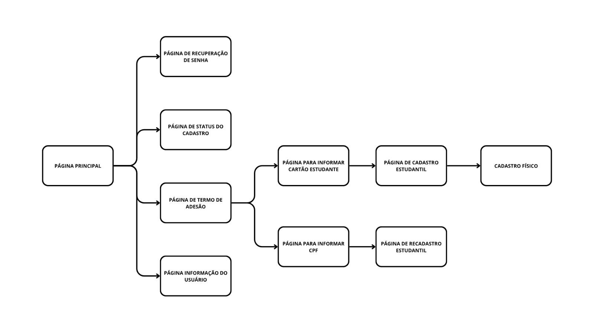

Contexto do Projeto
O Consórcio 123 é a empresa responsável por gerenciar o Sistema de Bilhetagem Eletrônica do transporte público de São José dos Campos, assim como a responsável pelo sistema de cadastro de estudantes para o passe estudantil municipal.
Atualmente, esse cadastro é feito em um site que não apresenta acessibilidade para usuários com deficiência visual, impossibilitando o seu uso de forma autônoma.
Diante desse contexto, o projeto tem como objetivo analisar o sistema atual e propor um redesign focado em acessibilidade para usuários com deficiência visual, permitindo que esses usuários consigam realizar o cadastro de forma independente, sem o auxílio de terceiros ou o comparecimento presencial.
Metodologia
Devido à dificuldade inicial de recrutamento e acesso direto a usuários
com deficiência visual para entrevistas na fase de descoberta,
a pesquisa de usuário foi estruturada a partir de uma triangulação
de métodos investigativos indiretos.
Para guiar essa investigação, adaptou-se os métodos dos cartões da IDEO
(Look, Ask, Learn e Try), concentrando os esforços nas três frentes:
Learn: análise de artigos científicos e diretrizes WCAG.
Look: observação indireta através de vídeos e registros de navegação.
Try: uso de leitores de tela para testar o sistema do Consórcio 123.
Pesquisa Secundária
Uma pesquisa secundária foi feita com a revisão de artigos científicos, análise de vídeos e registros digitais sobre acessibilidade para deficientes visuais, além de uma pesquisa de boas práticas e critérios técnicos de acessibilidade.
As principais dificuldades encontradas nos artigos e vídeos analisados foram:
- Imagens sem descrição textual;
- Textos apresentados como imagens;
- Formulários sem navegação em sequência lógica;
- Vídeos sem descrição textual ou sonora;
- Ausência de teclas de atalho;
- Elementos intrusivos, como pop-ups.
Análise do Sistema Atual
Foi realizada uma análise do fluxo de acesso do site, além da identificação de potenciais erros e do uso de ferramentas de empatia para compreender parcialmente a experiência de pessoas com perda total ou parcial da visão.
Na imagem abaixo, é apresentado o fluxo atual do site do Consórcio 123, onde podem ser percebidos problemas de organização e navegação, como páginas desnecessárias, informações pouco intuitivas e caminhos confusos para acessar determinadas funcionalidades.

Para complementar a análise, foi utilizado o software NVDA, um leitor de tela para computadores. Durante o experimento, dois alunos vendados tentaram realizar um cadastro no sistema, simulando parcialmente a experiência de uma pessoa com deficiência visual.
Os principais problemas identificados foram:
-
Imagens sem descrição: O leitor de tela não informa o conteúdo das imagens presentes no site;
-
Navegação desorganizada: O sistema “pula” elementos importantes durante a navegação pelo teclado;
-
Campos sem identificação: Caixas de texto não possuem descrição adequada, dificultando o preenchimento;
-
Textos ignorados: Alguns conteúdos não são lidos pelo leitor de tela durante a navegação com a tecla Tab.
Proto-Persona: Eduarda
Idade: 20 anos.
Ocupação: Estudante universitária.
Condição: Cegueira total.
Ela utiliza smartphone e computador com leitores de tela e navegação por teclado, busca autonomia para realizar o cadastro e recadastro do passe estudantil de forma remota, e precisa de um fluxo simples, lógico e acessível.